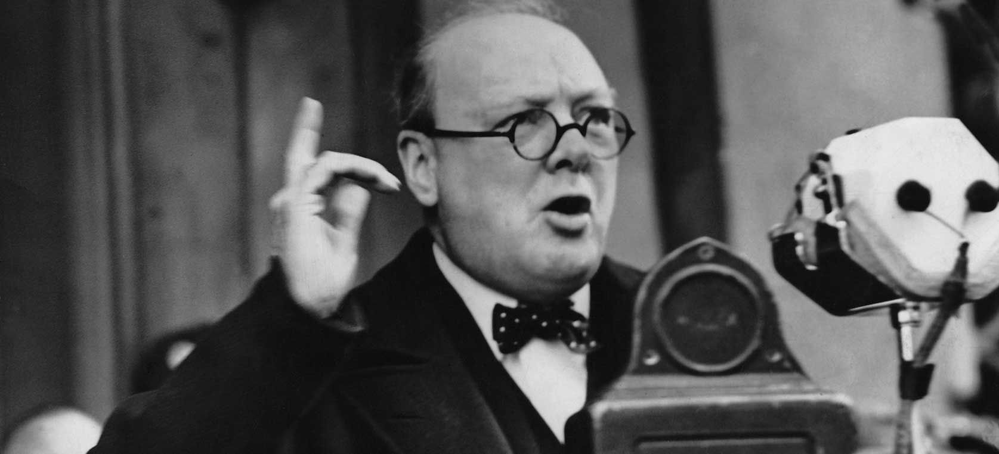

Winston Churchill
The man who changed the war.

Churchill Giving a Speech in 1939
- November 30, 1874 Winston Churchill is born in Oxfordshire.
Winston Churchill is born to Lord Randolph Churchill and Jennie Jerome in England. His father is a well-known politician and his mother is an American socialite. - December 1894 Churchill graduates from the Royal Military College in Sandhurst.
Churchill graduates from officer training school at Royal Military College in Sandhurst. As part of the cavalry, he is appointed as a cornet in the British military, which is the equivalent of second lieutenant in the U.S. military. - January 24, 1895 Churchill's father dies.
Lord Randolph dies at the age of 45. Even though Winston did not have a close relationship with him, he worries that he, too, will die and young and decides that he will do as much with his life as he can. - 1899 Churchill campaigns for Parliament.
At the invitation of prominent politician Robert Ascroft, Churchill runs for Parliament as part of the Conservative Party. He loses the election but impresses many with his campaigning skills. - Fall 1900 Churchill wins a seat in the British House of Commons.
The year after losing his bid for Parliament, Churchill wins a seat in the British House of Commons. After a fall-out within his party, Churchill switches to the Liberal Party four years later. - September 12, 1908 Churchill marries Clementine Hozier.
Churchill marries Clementine Hozier, who he met at a ball four years earlier, in a packed St. Margaret's Church at Westminster Abbey. They will have five children together. - December 22, 1941 Churchill's stay at the White House begins.
Churchill arrives in Washington, D.C. to discuss war strategy with President Franklin Roosevelt. By the time he leaves three weeks later, he and Roosevelt have developed a close friendship that will last until Roosevelt's death four years later. - February 4, 1945 Churchill attends the Yalta Conference.
Following the defeat of Germany in World War II, Churchill joins Roosevelt and Soviet Premiere Joseph Stalin at the Yalta Conference to discuss the organization of Europe after the war. One of the controversial decisions at the conference was to allow Germany to be divided into communist and non-communist, which will contribute to the tension of the Cold War. - July 5, 1945 Churchill loses the United Kingdom general election.
Despite his leadership in World War II, Churchill is defeated by Clement Atlee in the general election for prime minister. The majority of voters name social reform, such as the housing crisis, as their primary concern and believe that Atlee was better equipped to lead the nation on these issues. - March 5, 1946 Churchill gives his famous "iron curtain" speech.
Speaking to a group of students in Missouri, Churchill says that an "iron curtain" has fallen over Europe. He refers to Stalin's plan to spread communism across Europe and the term "iron curtain" becomes part of political vocabulary. - October 1951 Churchill is elected prime minster again.
Churchill is elected prime minister a second time, defeating Clement Atlee. This time as a member of the Conservative Party, he focuses on domestic affairs while also maintaining a close working relationship with the United States government. - December 10, 1953 Churchill wins the Nobel Prize for literature.
Churchill is awarded the Nobel Prize for literature. The author of 40 books, he wins the Nobel Prize for his entire body of work, particularly for the six-volume set of The Second World War. - 1955 Churchill retires as prime minster.
After a second stroke leaves him with difficulties speaking and walking, Churchill retires as prime minter of England. He suffers another mild stroke the following year. - January 24, 1965 Winston Churchill dies.
Two weeks after another stroke, Churchill dies at his home in London at the age of 90. His funeral is the largest state funeral in world history, attended by representatives from 112 countries.
Winston Churchill Timeline:
You have enemies? Good. That means you’ve stood up for something, sometime in your life.
- Winston Churchill
You can check the complete and inspiring life history of Winton Churchill HERE